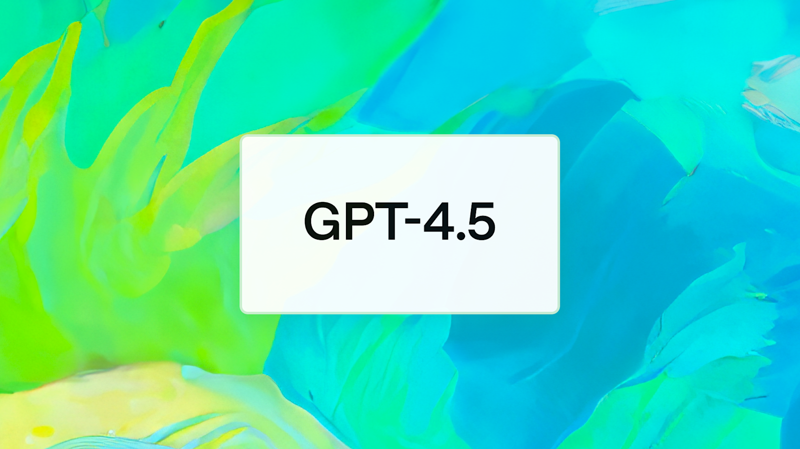

research preview
OpenAI · GPT · 2025-02 · 主干正代
GPT-4.5
继续扩大无监督学习，强化世界知识、模式识别与自然交流。


强调预训练 scaling 而非显式 reasoning
自然度与低幻觉是主要产品目标
编辑判断
GPT-4.5 是 OpenAI 对“更大预训练”和“更强推理”两条扩展轴的显式区分。
证据边界
官方未公开架构和训练规模；资料不足以写成论文级架构精读。
继续扩大无监督学习，强化世界知识、模式识别与自然交流。


research preview
强调预训练 scaling 而非显式 reasoning
自然度与低幻觉是主要产品目标
GPT-4.5 是 OpenAI 对“更大预训练”和“更强推理”两条扩展轴的显式区分。
官方未公开架构和训练规模；资料不足以写成论文级架构精读。